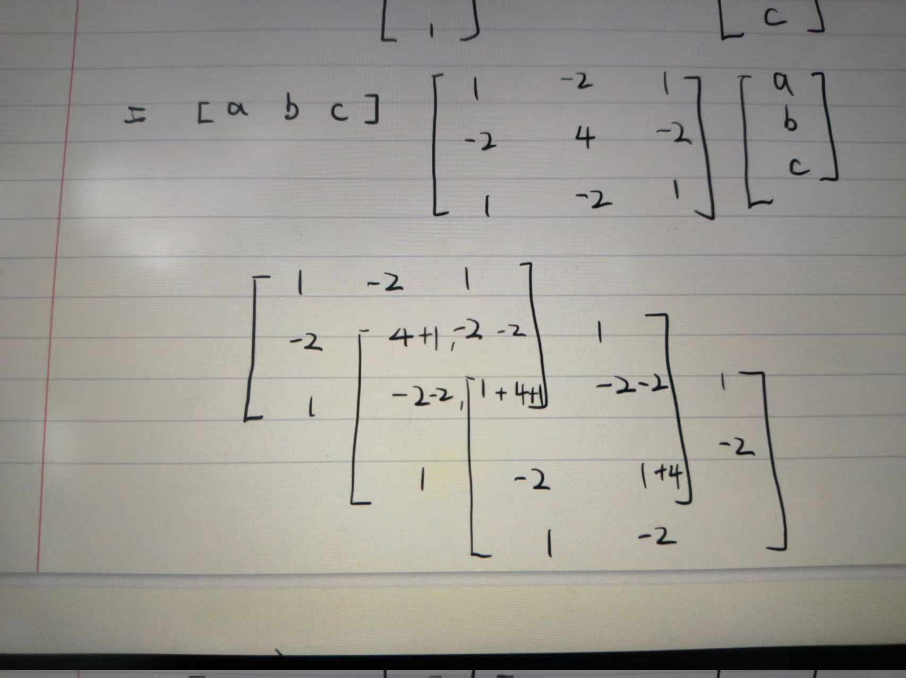

Introduction
在阅读 Apollo 中的 FemPosDeviationSmoother 实现时，一个非常关键但又容易陷入细节的问题是：
QP 中的 Hessian 矩阵 P 是如何构建的？为什么呈现出带状结构？这些 6、-4、1 的系数本质从哪里来？ 而且对于优化问题来说似乎共享同一种带状结构, 这也是稀疏性的来源
如果停留在代码层面，我们只能看到：
- 稀疏矩阵按列填充
- 不同位置系数不同（6X、5X、X…）
- 依赖相邻点的耦合关系
本文尝试从更高层抽象出这个问题的本质, 在本文的最后我们将会看到， 这其实是很多优化问题共有的结构特征， 而文中的讨论便以我们问题引入的FemPosDeviationSmoother为例子进行讨论。
若对FemPosDeviationSmoother的原理及细节感兴趣， 请参考FemPosDeviationSmoother
目标(代价函数)函数
QPs(quadratic programs)问题(本质问题是最小二乘的求解),其形式如下：
其中为优化变量， 为半正定矩阵 ， 为约束矩阵。
第一层次: 从数值计算的角度理解
由于上面二次型是求极小值， 而P为半正定矩阵， 所以可以通过求解其梯度为0来得到极小值点， 即：
其中P为Hessian矩阵， q为梯度向量。其解析解为：
第二层次: 从问题建模的角度理解
我们以FemPosDeviationSmoother为例子， 其核心目标函数可以抽象为：
这本质上是：
- 为平面中的点， 是对 对路径的二阶差分进行平方惩罚（近似曲率）
- 是对 路径长度的平方惩罚
- 是对 距离参考路径的平方惩罚
- 是对 松弛变量的惩罚
其P矩阵可以由单项展开叠加得到。以为例， 对单个项展开：
可以写成局部二次型：
而局部矩阵在更大规模矩阵的叠加可以从下图理解:

👉 关键结论：每一个 i 对应一个 局部 3×3 矩阵, 在更大矩阵中是其相对位置的局部展开系数的叠加， 换句话说对于我们讨论的这种目标函数的形式， 第i个点的系数受其前后点的影响。而由于次例子中局部矩阵大小为3x3矩阵， 故大矩阵的中间值都是不同位置叠加三次的系数， 这也与第i个点的cost二次项的系数仅与当前点、前后点有关的直觉吻合。
另一中看待这个矩阵运算的视角为局部矩阵可以看做卷积核， 在打矩阵的对角线滑过， 执行卷积操作。
这种叠加形式导致最后合成P矩阵天生具有稀疏性和对称性
进一步， 将上述cost中的二次性统一为如下矩阵形式：
其中优化变量, D 是二阶差分算子：
二次项可以理解为对决策变量进行线性组合后的能量项
Hessian 的本质
👉 所以：
故P矩阵(Hessian矩阵)具有以下性质：
- 对称 ✔
- 半正定 ✔
- 稀疏 ✔
- 带状结构 ✔
正是这些性质保证的凸优化问题的求解的快速性
第三层次：从卷积核算子角度理解
注意：
那么：
整个优化过程可以理解为：
- 用卷积核 (h) 作用在路径上（本例计算“弯曲程度”）
- 最小化其能量：
那么 P 是什么？
在卷积意义下：
P 对应卷积核的自相关（auto-correlation）
计算核的自相关：
对应到矩阵结构：
| 相对位置 | 系数 |
|---|---|
| i-2 | 1 |
| i-1 | -4 |
| i | 6 |
| i+1 | -4 |
| i+2 | 1 |
👉 这正是 P 的五对角带状结构来源。
第四层次：从物理意义理解
从物理意义上理解，这个优化问题是在寻找一条平滑的路径，使得路径的弯曲程度最小。换句话说，我们希望找到一条“最直”的路径，这条路径在每个点上的弯曲程度都尽可能小。
进一步, 我们可以把这条路径本身看做一条有弹力的弹簧， P矩阵是其内里的弹性张力(本身的性质， 如能量)， q代表了这条弹簧所受的外力， 其中参考线项为在每个路径采样点施加的引力， 而障碍物项为在每个路径点施加的斥力。A矩阵定义系统状态的可行域边界。
该优化问题本质上在于在约束空间上寻找受外力作用的弹性系统的平衡状态
第五层次：从控制论的角度理解
如果我们的问题是一个动态系统的轨迹优化问题，那么这个优化过程可以看作是在寻找一个控制输入序列，使得系统的状态轨迹满足某些平滑性和参考路径的约束。 其中等式约束通常建模在A矩阵中。这样优化问题的可行域便在该高维系统上的相空间上优化一个势场函数:
该空间中的势函数对应的力场函数为:
从控制问题的角度来看， 参考线项可以看做控制目标， 障碍物项可以看做外部扰动， 而路径平滑项可以看做系统的内在动力学特性。优化过程则是在寻找一个控制输入序列，使得系统在受外部扰动的情况下稳定在控制输入的动态过程。
7. 为什么这种理解很重要
理解调参的本质意义
在调参的过程中， 我们经常会调整权重（如路径平滑权重、参考线权重、障碍物权重等）， 我们在同时调整:
- 矩阵P, q的固定结构上的系数
- 调整卷积核算子的权重
- 调整优化问题的数学结构
- 调整内在弹力系数、引力系数和斥力系数
- 调整控制系统的响应过程与稳态性能
统一类问题不同视角的统一
同一个问题，可以从不同的角度理解：
- 数值计算(凸优化)角度
- 问题建模角度
- 卷积核算子角度
- 物理意义角度
- 控制论角度
统一不同领域的理解
这个结构同时存在于：
- 路径平滑
- 信号处理（滤波）
- 有限元方法（FEM assembly）
- 图优化（Laplacian）
与 FEM 这个名称的关系
这也是 FemPosDeviation 命名的来源之一：
- 局部 element（差分模板）
- 局部矩阵
- 全局 assembly（叠加）
👉 完全符合有限元思想。
核心总结
路径平滑问题可以被看作“差分算子卷积核的能量最小化问题”, 等价于在状态空间中等效力平衡位置(稳态)的求解问题。
这种理解不仅揭示了优化问题的内在结构，还为我们提供了一个统一的视角，帮助我们更好地理解、设计和调试优化算法。
10. 一句话 takeaway
从“逐项展开矩阵”跃迁到“动力约束下的优化问题”，是理解路径优化问题的关键一步。